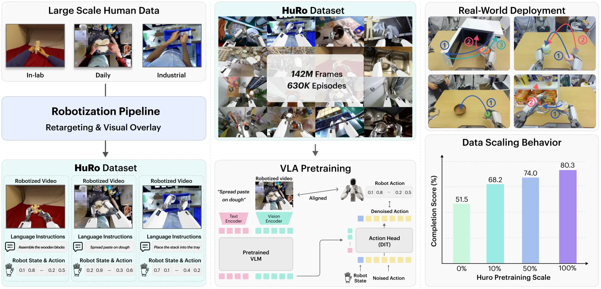
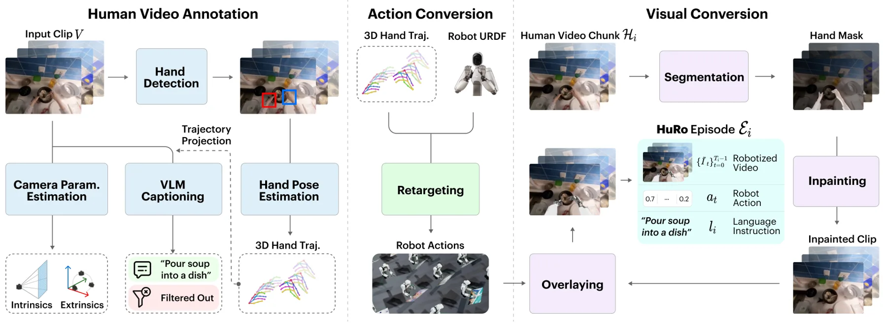
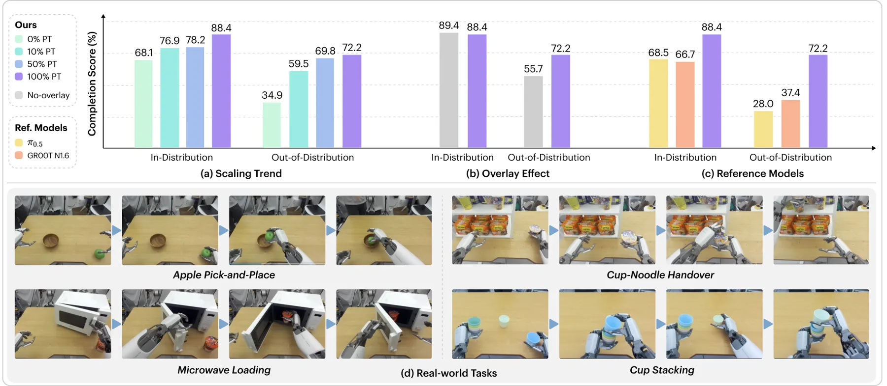
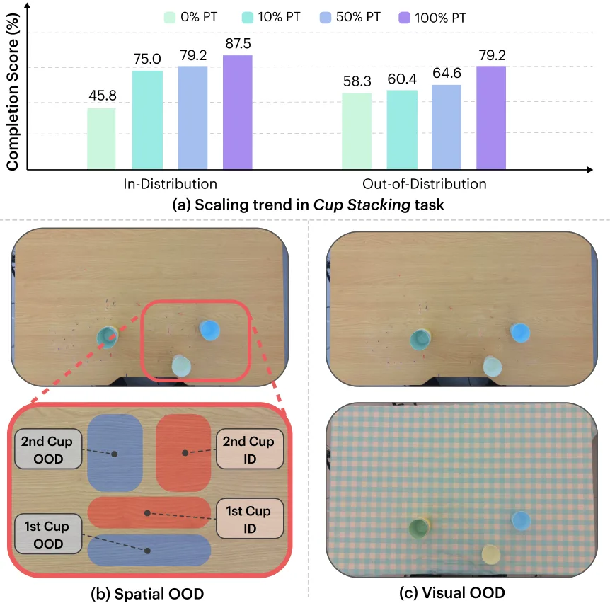
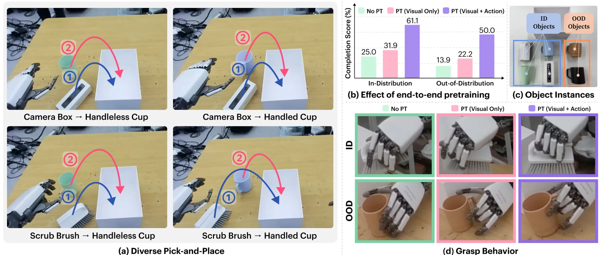
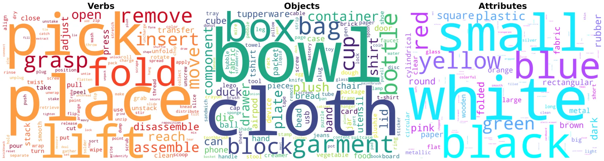

HuRo：将人类视频机器人化用于可扩展 VLA 预训练
HuRo: Robotizing Human Videos for Scalable VLA Pretraining
HuRo 把人类视频规模优势转化为 VLA 可用的机器人对齐监督，并用真实任务和 OOD 扰动验证规模效应。对空间智能路线而言，它提供了一个可拆分的‘视频表征—动作重定向—闭环策略’桥梁，但还需要显式接入状态不确定性与地图记忆。
episodes
frames
completion
OOD completion
作者、单位与技术谱系 · Research context
作者与单位
研究脉络
- human-video pretraining方法基座关系：利用大规模人类视频提供比真实机器人采集更丰富的视觉行为覆盖。[论文原文]
- robotization / action retargeting方法上游关系：沿用视频机器人化和动作重定向思想，并把观测、动作与中间信号统一扩展到规模化数据。[论文原文]
- HuRo本篇推进关系：提出统一 pipeline 和数据集，系统评估规模、视觉机器人化与端到端 VLA 预训练。[arXiv 摘要页]
合作网络
- 作者—机构论文署名作者组 → RLWRLD / Yonsei University关系：论文署名单位[官方 arXiv HTML]
- HuRo projectHuRo 研究者署名组 → 3587jjh.github.io/HuRo关系：论文明确给出的代码与数据项目页[HuRo 项目页]
未发现公开来源支持导师/师生关系，因此不作推断。
方法本质拆解 · What actually changed
训练改变了什么？
HuRo 不是纯推理时适配，而是构建 robotized dataset 并用于 VLA pretraining；作者还比较视觉机器人化和 retargeted actions 的端到端训练。训练改变的是策略对机器人观测/动作分布的适配程度，而非一个显式几何后端。
新增了什么约束？
主要约束来自 robot-aligned observations、retargeted actions 和按标注层级补全的中间信号，而不是位姿因子或几何 loss。它把 human-to-robot embodiment gap 变成数据对齐问题，但没有保证轨迹满足真实动力学或状态估计一致性。
推理时做了什么？
论文中的部署是 VLA policy 根据机器人观测生成动作，重点收益来自单次预训练后的策略泛化，而不是在线 BA、地图优化或测试时轨迹搜索。实际推理阶段的状态置信度、失败检测和恢复机制仍需下游系统补充。
方法本质是什么？
HuRo 通过把人类视频转成机器人视角和动作语义，扩大 VLA 的行为覆盖并降低真实机器人数据成本。它改变的是策略学习的数据分布与 embodiment alignment，不直接解决几何状态估计；最适合的迁移是把状态估计输出作为对齐后的中间监督或策略输入。
机器人化人类视频 + 重定向动作，把大规模视觉行为数据对齐到机器人观测/动作空间，以提升 VLA 的任务与 OOD 泛化。

桥接价值Bridge
桥接价值
HuRo 位于 3D/4D 视觉表征与具身决策之间：它不要求所有预训练数据都来自真实机器人，而是把人类视频变成机器人可消费的观测和动作轨迹。对可靠状态估计的桥接点是把视觉域偏移、动作重定向误差和闭环失败分别评估，而不是只看离线视觉相似度。
方法与模块Method
方法摘要
robotization pipeline 从五个来源处理约 630K episodes、142M frames，推断缺失的中间信号并生成 robot-aligned observations/action trajectories。随后用这些数据预训练 VLA，并在真实机器人任务上比较预训练规模、视觉机器人化和端到端 action pretraining 的贡献。
可迁移模块
最可迁移的是分层标注与对齐管线：把人类视频转换成观测、动作和中间监督，并显式区分 visual robotization 与 retargeted actions。对于空间导航，可将同样接口扩展为相机位姿、局部地图、目标相对位姿和不确定性标签，再让策略读取状态置信度。

证据Evidence
关键证据与数字
官方论文报告数据集约 630K episodes、142M frames，覆盖五个 human-video sources；四项真实操作任务中 overall completion 从 51.5% 增至 80.3%，OOD completion 从 34.9% 增至 72.2%。这些数字证明规模和机器人化有用，但尚未量化状态估计误差或长时序地图记忆对成功率的独立贡献。
边界与下一步Limits & Next Step
边界与风险
人类视频到机器人 embodiment 的转换可能引入不可观测的接触、动力学和相机视角误差，尤其在遮挡、碰撞和需要精确几何反馈的任务中。论文的真实评测是四项操作任务，尚不能直接推出对动态导航、传感器失效或长期闭环定位的鲁棒性；这些属于待核验风险。
下一步实验
在同一 VLA 上加入视觉里程计/深度/目标相对位姿的置信度 token，分别注入遮挡、尺度漂移和定位跳变，测量成功率、恢复率、碰撞率和动作 jerk。再比较 human-video-only、robot data-only、HuRo 和 HuRo+state-confidence，验证收益来自数据规模、对齐质量还是状态反馈。
{kind=link}

{kind=link}

{kind=link}

{kind=link}
